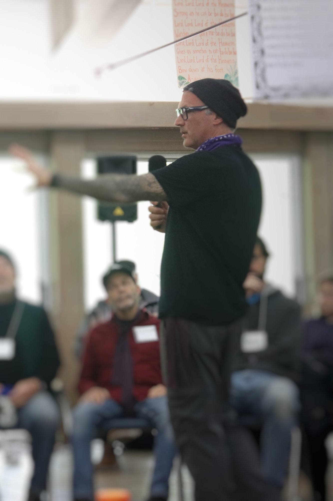

More than ten years ago, I got sober. Not because I had hit a dramatic bottom, but because I could see clearly enough to know that I wanted to become a different kind of man — a better father to my sons, and a more honest version of myself. That decision turned out to be a doorway into something far larger than I expected.
Getting sober cracked me open. It began a long inquiry into what it actually means to be a man, to be present, to be of use to the people I love. I started seeking out men's work — circles, rites, initiatory experiences — first because I needed it myself, and later because I wanted my sons to have what I had not: elders who could help them cross thresholds with intention, and a community of men who knew how to hold one another.
I became the guide I needed when I was younger. And I'm still becoming him.
The loss of my mother deepened everything. Grief has a way of stripping away the surface of things, leaving you standing in front of questions you can no longer defer. Who am I without the roles I play? What do I actually believe? What does it mean to live with integrity, all the way down? Those questions sent me further inward — into meditation, into plant medicine work, into the slow and nonlinear process of learning to be present with what is, rather than what I wished it were.
I work in corporate technology and teach graduate-level courses in AI ethics. I live in the world — the fast, pressured, screen-saturated world that most of us inhabit. I know what it is to do this inner work not from a retreat center, but from inside a full and complicated life. That is not a limitation. I think it is the point.
I am currently completing my certification as a mindfulness meditation teacher through the Mindfulness Meditation Teacher Certification Program with Tara Brach and Jack Kornfield. I teach at Sacred Roots in Charlotte, NC, and online, on a love-offering basis.
I am not someone who has arrived. I am someone who has learned — through loss, through failure, through practice — that the path is made by walking it. If you are ready to walk yours more honestly, I would be honored to walk alongside you.

Facilitating a men's circle
Traveler, there is no path.
The path is made by walking. — Antonio Machado